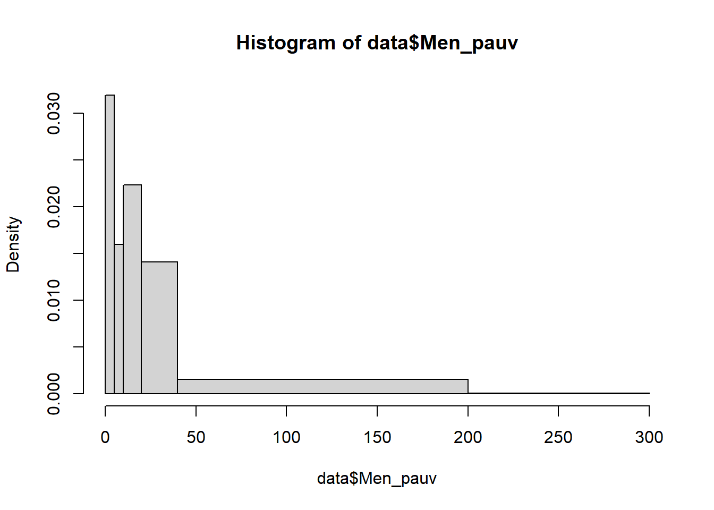
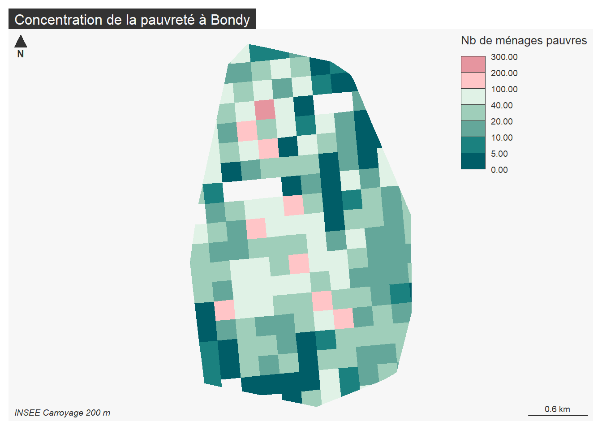
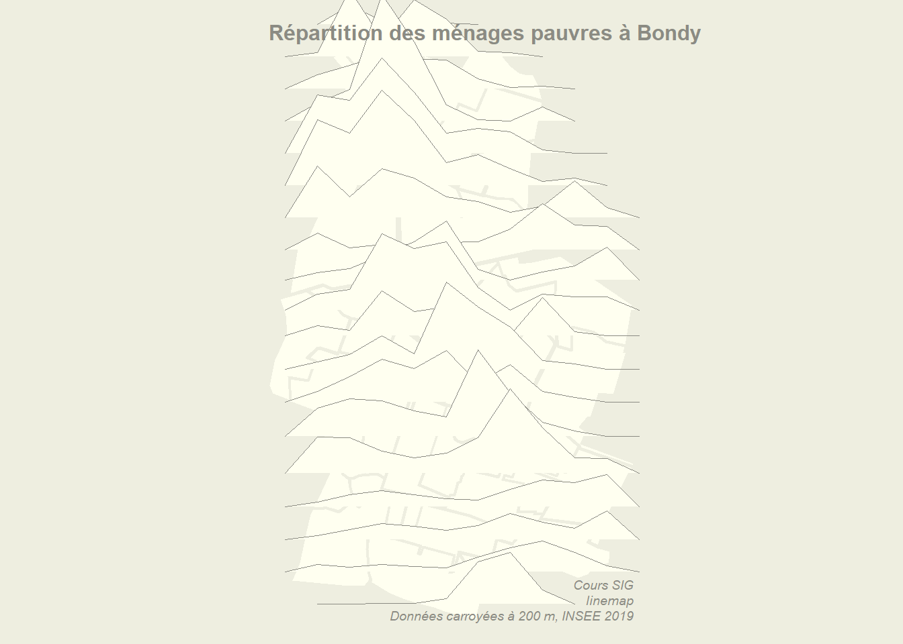

Valorisation : sémiologie et mise en page
B. Maranget
13/03/2021
1 Sémiologie
1.1 Une définition rapide
Un ensemble standardisés de règle dont …
1.1.1 Première règle de sémiologie
1.1.2 La cheatsheet du package mapsf

Cette cheatsheet pe Illustrationrmet de cataloguer toutes les cartes possibles.
1.2 Illustration
1.2.1 Reprise des données sur le nombre de ménages
## Reading layer `inseeBondy' from data source
## `C:\Users\tachasa\Documents\sauveGIT\03_coursDashboard\data\vote.gpkg'
## using driver `GPKG'
## Simple feature collection with 188 features and 42 fields
## Geometry type: POLYGON
## Dimension: XY
## Bounding box: xmin: 661088.1 ymin: 6865338 xmax: 663354.7 ymax: 6869043
## Projected CRS: RGF93 / Lambert-9324 variables disponibles, on prend celui du nombre de ménages pauvres.
1.2.2 Discrétisation : étudier sa distribution
## Min. 1st Qu. Median Mean 3rd Qu. Max.
## 0.00 11.00 22.00 32.82 42.00 294.00# Le maximum est très éloigné du 3e quartile !
hist(data$Men_pauv, breaks = c(0,5,10,20,40,200,300))
Cette distribution permet de distinguer dans le groupe des très pauvres les différentes catégories.
1.2.3 Cartographie
Comment rendre cette distribution très inégale ?
L’usage d’une palette différente peut-être une solution.
library(mapsf)
paliers <- c(0,5,10,20,40,100,200,300)
palette <- mf_get_pal(n = c(5,2), pal = c("Mint", "Burg"))
mf_map(data, type ="choro", var = "Men_pauv", breaks = paliers, paliers, pal = palette, border = NA, leg_title = "Nb de ménages pauvres")
mf_layout(title = "Concentration de la pauvreté à Bondy", credits = "INSEE Carroyage 200 m")
Essai de lissage spatiale
https://rcarto.github.io/carto_avec_r/chapitre3.html
## Reading layer `zone' from data source
## `C:\Users\tachasa\Documents\sauveGIT\03_coursDashboard\data\vote.gpkg'
## using driver `GPKG'
## Simple feature collection with 32 features and 5 fields
## Geometry type: MULTIPOLYGON
## Dimension: XY
## Bounding box: xmin: 661088.1 ymin: 6865338 xmax: 663354.7 ymax: 6869043
## Projected CRS: RGF93 / Lambert-93opar <- par(mar=c(0,0,0,0), bg = "ivory2")
bb <- st_bbox(data)
serie <- data [, c("Men_pauv"), drop = F]
grille <- getgrid(x = serie, cellsize = 200, var = "Men_pauv")
plot(st_geometry(limite), col="ivory1", border = "ivory2")
linemap(
x = grille,
var = "Men_pauv",
# hauteur des lignes
k = 5,
# longueur des lignes
threshold = 0.1,
col = "ivory1",
border = "ivory4",
lwd = 0.6,
add = T
)
text(x = bb[1], y = bb[4],adj = c(0,1),
labels = "Répartition des ménages pauvres à Bondy",
col = "ivory4", font = 2, cex = 1)
# add sources
mapsources <-"Cours SIG\nlinemap\nDonnées carroyées à 200 m, INSEE 2019"
text(x = bb[3], y = bb[2],labels = mapsources,
col = "ivory4", font = 3, adj = c(1,0), cex = 0.6 )
Lissage spatiale
https://riatelab.github.io/potential/articles/potential.html
2 Mise en page
Là également, la cheatsheet permet d’avoir une vision globale.
Une des fonctions les plus intéressantes est de pouvoir insérer l’histogramme dans la carte.
Pour illustrer, cette mise en page, on utilise les 2 listes ayant rassemblé le plus de votant.
## Reading layer `jointure' from data source
## `C:\Users\tachasa\Documents\sauveGIT\03_coursDashboard\data\vote.gpkg'
## using driver `GPKG'
## Simple feature collection with 32 features and 18 fields
## Geometry type: MULTIPOLYGON
## Dimension: XY
## Bounding box: xmin: 661088.1 ymin: 6865338 xmax: 663354.7 ymax: 6869043
## Projected CRS: RGF93 / Lambert-93## Résultats.liste.1...Liste.de.la.gauche.unie.pour.Bondy....Sylvine.THOMASSIN.
## 3380
## Résultats.liste.2....Pour.Bondy.allons.plus.loin....Stephen.HERVE
## 4591
## Résultats.liste.3....Bondy.pour.une.gauche.sociale.insoumise.et.populaire....Jamal.AMMOURI
## 370
## Résultats.liste.4....Bondy.autrement...Vincent.DUGUET
## 500
## Résultats.liste.5....Bondy.c.est.vous...Sylvie.BADOUX
## 361## Résultats.liste.1...Liste.de.la.gauche.unie.pour.Bondy....Sylvine.THOMASSIN.
## Min. : 47.00
## 1st Qu.: 84.75
## Median :105.50
## Mean :105.62
## 3rd Qu.:121.25
## Max. :181.00
## Résultats.liste.2....Pour.Bondy.allons.plus.loin....Stephen.HERVE
## Min. : 86.0
## 1st Qu.:117.2
## Median :143.5
## Mean :143.5
## 3rd Qu.:166.5
## Max. :221.0palette <- terrain.colors(8, rev = T)
seuils <- c(0,25, 50, 75, 100, 125, 150, 175, 200)
png("img/resultTHOMASSIN.png", width = 4000, height = 4000, res = 400)
mf_choro(data, var = "THOMASSIN", breaks = seuils, pal = palette,border = NA, leg_pos = "n")
mf_label(data, "THOMASSIN")
mf_inset_on(data, pos = "topright")
par(mar = c(2,2,2,2))
hist(data$THOMASSIN, border = NA, breaks = seuils, right = F, col=palette, main = "", xlab = "", ylab="")
mf_inset_off()
dev.off()## png
## 2
L6ECSIG Construction et utilisation des SIG